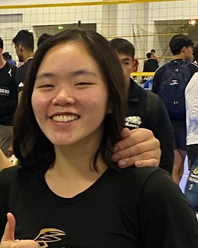
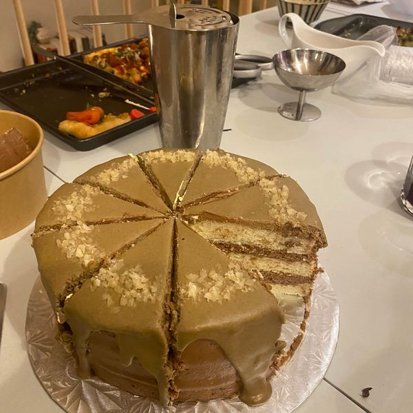
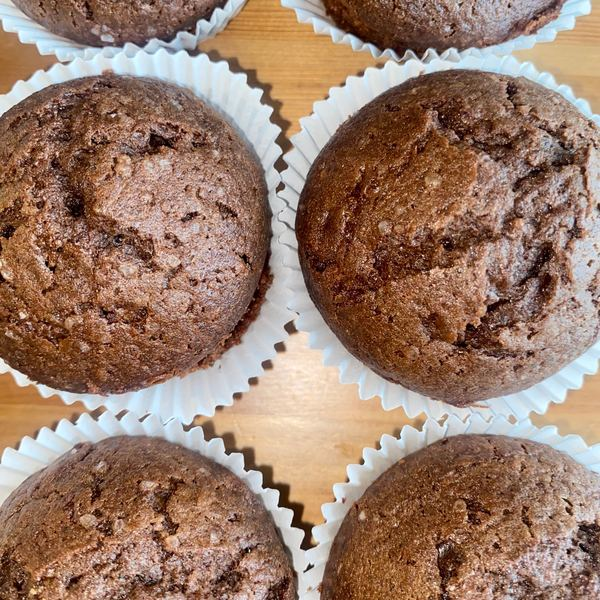
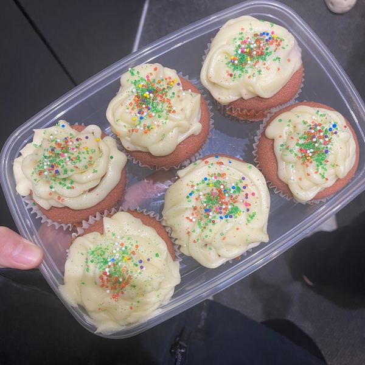

Research Engineer, Lee Language Lab
Extended the URIEL+ typological knowledge base and co-authored four papers built on it. Reviewed code for the URIEL+ papers.
Hoàng Hạnh Phương
I'm a software engineer who likes building the parts of a system that everyone else gets to lean on. So far, that's meant AI infrastructure at Huawei and research tools at the University of Toronto. What's next? I'm open to backend, infrastructure, ML, or something I haven't tried yet!

Most recently, I spent a year as a software engineer co-op at Huawei Canada's Noah's Ark Lab, working on mobile AI infrastructure: serving models on our own GPUs, and keeping a fleet of devices running smoothly even when they'd rather not. Before and alongside that, I spent two years as a research engineer at the University of Toronto's Lee Language Lab, where I worked on URIEL+, a database of how the world's languages relate to one another, and co-authored four papers along the way.
I graduated from the University of Toronto in 2026 with an Honours Bachelor of Science, with High Distinction, in Computer Science and Psychology.
Healthcare has always been close to home for me, since my mother and brother both work in the industry, and mental health in particular is something I care about deeply. That's what first drew me to psychology. Then a few cognitive science courses got me hooked on how people think, and especially on how we sort the world into categories. Half of software engineering is arguing about which box something belongs in, so it's turned out more useful than I expected!
Extended the URIEL+ typological knowledge base and co-authored four papers built on it. Reviewed code for the URIEL+ papers.
Self-hosted model inference on NVIDIA GPUs, including serving Qwen2-VL locally instead of through an API. Worked on a device framework that handles device failures, timeouts and retries, with automated tests, and reviewed teammates' code.
Published as Phuong Hanh Hoang. Full list on the ACL Anthology.
Student Research Workshop
A work-in-progress research pipeline for improving how culturally accurate a language model's answers are, built in the University of Toronto's LLM systems research course.
When I was younger, I promised myself I'd be fluent in ten languages by the time I turned thirty. Polyglots seemed like the coolest people alive, and I fully intended to become one.
So far, I'm at five. Two of those are fluent, although I'll admit that's cheating a little: Vietnamese is my mother tongue, so I should be good at it regardless, and English was never really optional for someone living in Canada. French is getting there, slowly but stubbornly, while Spanish and Mandarin are still very much works in progress.
Somewhere along the way, I also picked up Python, and then a handful of other programming languages after it. I'm counting them toward the ten. Nobody has told me they don't count!
That childhood goal is also how my research ended up in multilingual NLP. I care about the languages technology tends to leave behind, from endangered languages to dead ones, although the dead ones do have one advantage: they never complain about the output.
I play in several leagues as a setter, which means my job is to make other people look good and receive none of the credit. It was excellent preparation for infrastructure work.

Cookies are my default, although muffins have been gaining ground fast lately. When I'm feeling ambitious, I'll take on brownies, banana bread, pies, scones, cheesecake or cream puffs. My most requested recipe is matcha cookies, made with white chocolate and either marshmallow or roasted macadamia nuts.
Recently, I made my first ever birthday cake! It tasted better than it looked, which I maintain is the correct order of priorities. Recipes are small experiments with fast feedback, and luckily my friends are always happy to be the evaluation set.

 Apple rose tart
Apple rose tart Japanese cotton cheesecake
Japanese cotton cheesecake Marshmallow chocolate cookies
Marshmallow chocolate cookies
Layer cake Crepe cake
Crepe cake Cinnamon roll
Cinnamon roll Raspberry cheesecake brownies
Raspberry cheesecake brownies
Chocolate muffins
CupcakesI'm looking for entry-level software roles, whether that's backend, infrastructure, ML or research engineering, in Toronto, remote in Canada, or further afield. If anything here caught your eye, I'd love to hear from you.
Email hhpfiona@gmail.com See my GitHub